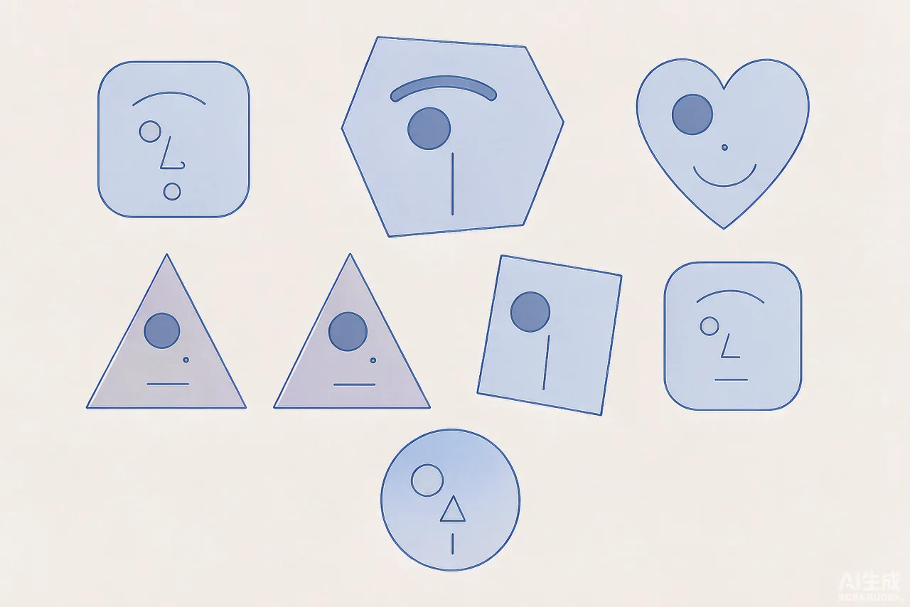

人格结构
探讨特质、自我、动机与认知成分如何构成有序的人格系统。奥尔波特区分共同特质与个人特质，强调个体独特性；米歇尔的情境主义则质疑特质的跨情境一致性，引发“人—情境之争”。当代观点多认为人格与情境共同塑造行为，二者不可偏废。
基础心理学 · DISCIPLINE
Personality Psychology
研究人格的结构与形成机制
人格心理学研究个体稳定而独特的心理特征体系，关注人格的结构、动力、发展与测量，试图回答人为何形成不同的性格、人格如何影响行为与适应，以及它在一生中如何保持与改变。历史上形成了精神分析、特质理论、人本主义、行为主义与认知取向等多种路径，其中大五人格模型是当代最具影响的特质结构。例如，尽责性较高的人通常更善于计划与坚持，而高神经质者对负面情绪更为敏感。该学科对自我认识、教育、组织管理与人际交往具有参考价值，也是理解个体差异与行为适应的重要途径。

这个分支主要研究什么
探讨特质、自我、动机与认知成分如何构成有序的人格系统。奥尔波特区分共同特质与个人特质，强调个体独特性；米歇尔的情境主义则质疑特质的跨情境一致性，引发“人—情境之争”。当代观点多认为人格与情境共同塑造行为，二者不可偏废。
阐述弗洛伊德的潜意识与本能理论、马斯洛的需要层次理论等，说明推动行为的内在动力。弗洛伊德把人格分为本我、自我与超我，强调冲突与防御；马斯洛则从生理需要到自我实现排列出层级，突出成长倾向与人本主义视角。
分析人格特征在生命周期中的形成、稳定与变化。埃里克森提出心理社会发展阶段，强调每个阶段的核心任务；纵向研究显示，人格在成年后总体趋于稳定，但尽责性与宜人性可能随年龄上升。遗传与环境的相对作用仍是研究重点。
介绍自陈量表与投射测验等评估方法。大五人格量表以维度分数描述个体差异，具有较高信度；罗夏墨迹测验则呈现模糊刺激，让被试自由反应，据称可揭示潜在动机。两者在信效度与解释方式上差异明显，使用时需结合其他资料谨慎解释。
阐述开放性、尽责性、外倾性、宜人性与神经质五个维度的内涵。这些维度在多种文化与语言中重复出现，具有较好的跨文化适用性；研究发现它们与工作表现、人际关系及情绪适应存在一定关联，但相关并不等于因果，解释时需避免标签化。
这一分支能带来什么
学习人格心理学能让你用更细致的方式理解人与人之间的差异，而不是简单贴标签。掌握大五人格等框架后，你能在团队协作、人际沟通与自我反思中识别行为偏好的来源，解释为何某些环境让你更投入，并为自身成长选择更合适的情境与策略。
一项奠定了这个领域的研究
戈登·奥尔波特被视为美国特质心理学的奠基者。20世纪上半叶，他批评把人格简单归为少数类型，主张每个人都有独特的特质组合，并区分共同特质与个人特质，强调个人特质才是理解个体的关键。他在1937年出版的《人格：一种心理学的解释》中系统阐述了特质的层次与动态观，把人格理解为驱动行为的心理结构。奥尔波特还倡导以多种方法研究个体，并推动人格心理学摆脱精神分析的主导框架，为后来大五人格模型的提出奠定了概念基础。
还没定论的问题，往往最值得追问
人格心理学长期争论行为主要由稳定特质还是由情境决定。米歇尔在1968年指出特质预测行为的相关不高，引发情境主义挑战；后来研究者提出特质与情境的交互作用，并区分强情境与弱情境。当前共识是两者共同作用，但相对权重仍有争议。
人格在成年后是稳定不变还是可以改变，存在持续讨论。多数纵向研究显示平均变化缓慢，但重大生活事件与有意识的训练可能带来改变。如何区分真实改变与测量波动，以及变化是否具有适应意义，仍是研究与应用的难点。
把概念带回日常观察
回想最近一周，为开放性、尽责性、外倾性、宜人性、神经质各找一个自己身上的小例子，例如尝试新菜谱对应开放性、按时完成任务对应尽责性。把例子写下来并标注情境，看看哪些表现是跨场景稳定的、哪些随环境变化。仅作自我观察，不构成诊断。
怎么研究，用在哪里
进入这个分支的术语入口
与这一领域密切相关的名字
创立精神分析理论，提出人格结构与潜意识动力学说，深刻影响人格研究取向。
提出需要层次理论与人本主义人格观，强调人的自我实现倾向与成长潜能。
被视为特质理论奠基者，区分共同特质与个人特质，重视个体的独特性。